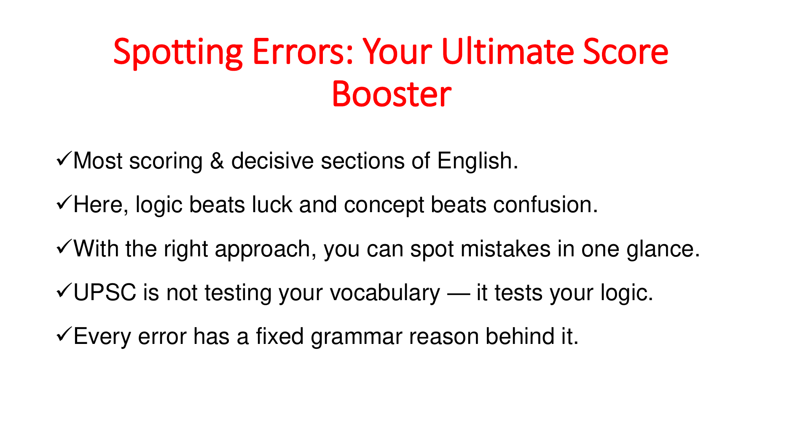

NDA/NA English
Dedicated English preparation with grammar, vocabulary, comprehension, ordering, error detection, topic-wise PYQs, year-wise papers and sample-paper practice.
Open study material →Follow the NDA/NA English preparation path and access the complete NDA Vault — grammar, vocabulary, topic-wise PYQs, year-wise papers, sample-paper practice and SSB/OLQ support — without switching between separate pages.
Concepts, grammar, vocabulary, topic-wise previous years’ questions, year-wise papers and exam-readiness are now merged with the NDA Vault on this single page.
Dedicated English preparation with grammar, vocabulary, comprehension, ordering, error detection, topic-wise PYQs, year-wise papers and sample-paper practice.
Open study material →Cover core rules, spotting errors, sentence improvement, voice, narration, question tags and other frequently tested grammar areas.
Open Grammar →Build exam-ready vocabulary through synonyms, antonyms, idioms, phrasal verbs, OWS and confusing words.
Open Vocabulary →Use the Question Bank to practise 20 years of questions organised by topic for focused NDA pattern coverage.
Open Topic-wise PYQs →Recreate the real pattern through phase-wise papers from 2015 to 2026 with answers and explanations.
Open Year-wise PYQs →Strengthen speed, accuracy and confidence through sample papers and the latest practice-book approach.
Open Sample Paper Practice →Support written preparation with awareness of SSB stages, Officer Like Qualities and overall NDA orientation.
Open SSB Support →Now powered by five focused learning libraries: 100 Golden Rules of English Grammar, the NDA/NA English Question Bank, Mastering NDA/NA English, Mastering NDA/NA English Vocabulary and year-wise NDA/NA PYQs.

The attached resource contains 100 numbered grammar rules. It opens with a score-boosting approach to spotting errors and then moves through high-frequency competitive grammar patterns, including Subject-Verb Agreement, correlative conjunctions, comparison structures, determiners, pronouns and conditionals.
The Question Bank is built for systematic practice of previous NDA/NA English questions. Its topic structure includes Synonyms, Antonyms, Idioms & Phrases, Fill in the Blanks, Spotting Errors, Sentence Improvement, Ordering of Words, Sentence Ordering and Reading Comprehension, followed by a Grammar at a Glance revision section.
Previous-years NDA/NA synonym questions arranged topic-wise, with answer support from the book.
Download PDFPYQ ModulePrevious-years NDA/NA antonym questions with exam-oriented strategy and answers.
Download PDFPYQ ModuleNDA/NA idioms and phrases drawn from previous examinations, organized for rapid revision.
Download PDFPYQ ModulePrevious-years fill-in-the-blank questions covering grammar, vocabulary and contextual usage.
Download PDFPYQ ModuleA large topic-wise bank of previous-years NDA/NA error-detection questions with explanations.
Download PDFPYQ ModulePrevious-years sentence improvement questions with correct usage and explanation.
Download PDFPYQ ModuleJumbled-word and sentence-construction questions from NDA/NA previous papers.
Download PDFPYQ ModulePrevious-years paragraph and sentence-ordering questions for logical sequencing practice.
Download PDFPYQ ModuleNDA/NA previous-years reading passages with questions, answers and explanations.
Download PDFPYQ ModuleA bonus quick-revision section containing important grammar rules and error patterns.
Download PDFQuick RevisionThis learning series uses the non-vocabulary sections of Mastering NDA/NA English to strengthen core grammar, error detection, sentence construction, transformation and comprehension. Each module is available as a focused PDF for revision and practice.
Core noun concepts, rules, common errors and practice sets.
Download PDFPronoun types, agreement, usage rules, common errors and practice.
Download PDFAdjective types, degree and usage patterns with exam-oriented practice.
Download PDFArticles, quantifiers and determiner usage with common-error practice.
Download PDFAdverb types, position and usage with rule-based practice.
Download PDFHigh-yield concord rules with examples, error patterns and practice.
Download PDFCoordinating, subordinating and correlative conjunctions with usage practice.
Download PDFNDA/NA-style contextual grammar and vocabulary questions with answers.
Download PDFPrevious-years-style error detection with answers and explanations.
Download PDFSentence correction and improvement questions with explanations.
Download PDFJumbled sentence and paragraph ordering practice with answer explanations.
Download PDFVoice rules, transformation patterns and practice sets.
Download PDFDirect and indirect speech rules, transformations and practice.
Download PDFQuestion-tag rules and exam-focused practice with answer key.
Download PDFCompact revision of conditionals, infinitives and gerunds.
Download PDFPrevious-years NDA/NA comprehension passages with questions and explanations.
Download PDFFunctional shift and identification of the same word in different grammatical roles.
Download PDFA focused spelling revision list for competitive examinations.
Download PDFBuilt from Mastering NDA/NA English Vocabulary, this library brings the book's major vocabulary areas into convenient topic-wise PDFs for revision and competitive-exam preparation.
A practical guide to why vocabulary matters and how to learn, retain and use words effectively.
Download PDFFrequently asked and essential synonyms with Hindi meanings, usage examples and practice.
Download PDFHigh-frequency antonyms with Hindi support, contextual understanding and practice.
Download PDFExam-oriented idioms and phrases with meanings, usage and reinforcement practice.
Download PDFImportant phrasal verbs for competitive English with meaning, usage and practice.
Download PDFCommon word-preposition combinations and exam-oriented collocation practice.
Download PDFFrequently confused words and homonyms explained for accurate usage.
Download PDFHigh-frequency one-word substitutions for competitive examinations.
Download PDFUseful prepositional phrases with meanings and contextual usage.
Download PDFWord-building techniques to infer meanings and expand vocabulary systematically.
Download PDFDownload the corrected year-wise PDFs containing Questions + Answers + Explanations. These PDFs replace the earlier versions and have been rebuilt from the supplied Set Wise PYQ source; header page numbers have been removed.
Verified NDA/NA English papers are grouped into dedicated year pages for faster revision and online practice.
Written success should be complemented by awareness of the SSB process and the Officer Like Qualities expected in future officers.